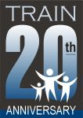

This page last updated: 2003/11/15
This site last updated: 2003/11/15
TRAIN 2003 Conference – November 7 & 8The TRAIN 2003 Conference is now . We trust and pray that you found encouragement in the LORD, and that your dreams will indeed take shape and bear fruit. We look forward to doing more for you in 2004.
The TRAIN 2004 Conference will be held on November 5-6, 2004. In the meantime, we would very much like to hear how your dreams are progressing. Please let us know! Also, if you attended a NetConnect session then you can stay connected with everyone in the discussion forums. Daring to DreamSometimes it's hard to dream. We live in a world of harsh realities, broken promises, and past hurts. At the same time, we have a God who is able to do immeasurably more than all we ask or imagine. God challenges us to dream at His level, looking beyond what makes sense, to discover what He wants to do in us and through us. TRAIN 2003 invites you to join us for an awesome weekend of training, inspiration and resources and we dare to dream together, letting God take hold of our lives and ministries to do something incredible for His Kingdom. We look forward to celebrating the of TRAIN with you – a fitting example of what God has done when someone dared to dream. See you in November!
Sheryl Grunwald Conference Information At-A-Glance
|